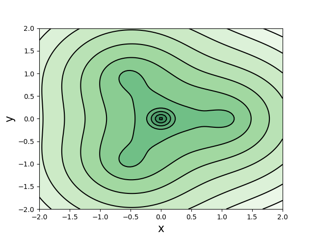
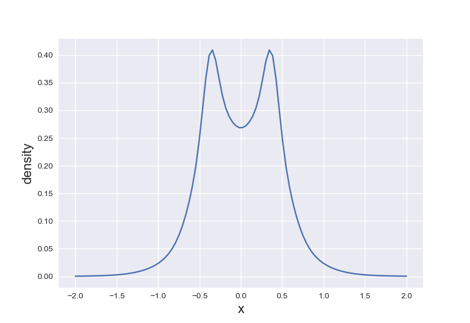
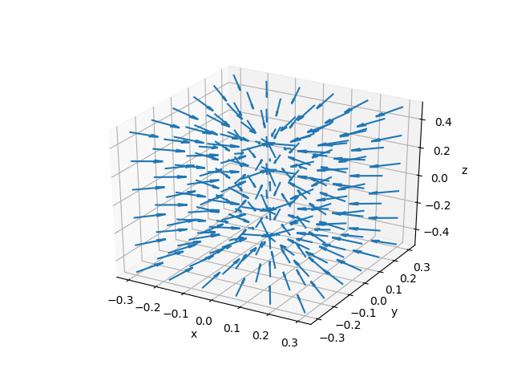

最近在看密度泛函的书，于是就想自己写一个能计算电子密度的程序，这样就可以具体地了解一些体系。而且由于更早一些时候才正经学了基组的知识，想弄清楚怎么把市面上的基组放在程序中使用（之前写HF程序用的是STO-3G，不涉及到分裂价层，而且没有涉及更多的壳层）。所以写这么一个程序还是可以帮我学到很多东西的。
代码上传到GitHub：https://github.com/St-Maxwell/ElectronDensity
参考了Sobereva的文章：高斯fch文件与wfn波函数文件的介绍及转换方法、利用wfn文件计算电子密度的代码的编写方法。
电子密度
在空间$\mathbf{r}$处找到任意一个电子的概率。 $$ \rho(\mathbf{r}) = N \int |\Psi(\mathbf{x}_1, \mathbf{x}_2,\ldots,\mathbf{x}_N)|^2\, d\omega_1 d\mathbf{x}_2\ldots d\mathbf{x}_N $$ 将上式展开为空间轨道（分子轨道）$\{\psi_a\}$，为 $$ \rho(\mathbf{r}) = 2 \sum\limits_a^{N/2} |\psi_a(\mathbf{r})|^2 $$ 若是自然轨道，则为 $$ \rho(\mathbf{r}) = \sum\limits_a^{N/2} \lambda_a |\eta_a(\mathbf{r})|^2 $$ 其中$\eta_a$是自然轨道，$\lambda$是自然轨道占据数。 实际计算中将用一组基函数将轨道展开，则密度的表达式可写为 $$ \rho(\mathbf{r}) = \sum\limits_a^{N/2} \lambda_a \left| \sum\limits_i C_{ai} \varphi_i(\mathbf{r}) \right|^2 $$ $C_{ai}$是展开系数，$\lambda_a$对于分子轨道就是$2$，对于自然轨道则是非整数。 基函数同样可以用一组Gaussian型函数（Gaussian Type Function，GTF）展开: $$ \varphi = \sum\limits_i a_i \chi_i^\text{GTF}(x,y,z) $$ $a_i$是收缩系数，$\chi^\text{GTF}$假定是Cartesian型GTF，有如下形式 $$ \chi = N x^{l_x} y^{l_y} z^{l_z} \mathrm{e}^{-\zeta r^2} $$ 归一化系数$N$的表达式为 $$ \begin{aligned} N &= \left( \frac{2\zeta}{\pi} \right)^{3/4} \left[ \frac{(4\zeta)^{l_x+l_y+l_z}}{(2l_x-1)!!(2l_y-1)!!(2l_z-1)!!} \right]^{1/2} \\ &= \left( \frac{2\zeta}{\pi} \right)^{3/4} \left[ \frac{(8\zeta)^{l_x+l_y+l_z}l_x!l_y!l_z!}{(2l_x)!(2l_y)!(2l_z)!} \right]^{1/2} \end{aligned} $$电子密度的梯度
电子密度的梯度为 $$ \nabla \rho(\mathbf{r}) = \frac{\partial \rho(\mathbf{r})}{\partial x}\mathbf{x} + \frac{\partial \rho(\mathbf{r})}{\partial y}\mathbf{y} + \frac{\partial \rho(\mathbf{r})}{\partial z}\mathbf{z} $$ 以$\partial \rho/\partial x$为例： $$ \begin{aligned} \frac{\partial \rho}{\partial x} &= \frac{\partial}{\partial x} \sum\limits_a^{N/2} \lambda_a \psi_a^2(\mathbf{r}) \\ &= \sum\limits_a^{N/2} 2\lambda_a \psi_a(\mathbf{r}) \frac{\partial \psi_a(\mathbf{r})}{\partial x} \end{aligned} $$ 分子轨道的导数最终可以用GTF的导数的线性组合表示： $$ \frac{\partial \psi_a(\mathbf{r})}{\partial x} = \sum\limits_i C_{ai} \sum\limits_j a_{ij} \frac{\partial \chi_j(\mathbf{r})}{\partial x} $$ GTF关于$x$的导数很容易得到，为 $$ \frac{\partial \chi_j(\mathbf{r})}{\partial x} = (l_x x^{l_x-1} - 2\zeta x^{l_x+1}) N y^{l_y} z^{l_z} \mathrm{e}^{-\zeta r^2} $$ 梯度的模 $$ |\nabla \rho| = \sqrt{\bigg(\frac{\partial \rho}{\partial x}\bigg)^2 + \bigg(\frac{\partial \rho}{\partial y}\bigg)^2 + \bigg(\frac{\partial \rho}{\partial z}\bigg)^2} $$需要从.fch文件读取的量
波函数类型 如果是自然轨道，需要手动将.fch文件第一行内容改为isNO；
从第二行确定波函数为R、U、RO。若使用的方法首字母为O，且为闭壳层的情况，会误认为波函数为RO，虽然并不影响密度的计算。
1 | SP RB3LYP 6-31G(d,p) |
.fch文件波函数类型
Gaussian
- 限制性分子轨道
- 闭壳层：默认即可
- 限制性开壳层：
RO
- 非限制性分子轨道
- 开壳层：默认即可
- 自旋极化单重态：
UHF/DFT guess=mix
- 自然轨道
density=current+guess(save,only,naturalorbitals) chkbasis- 限制性闭壳层：默认
- 非限制性开壳层：默认
- 限制性开壳层：不支持（
RO后HF都没有解析梯度） - 自旋极化单重态：以
UHF/DFT guess=mix作为参考态 - Gaussian输出的.fch中，自然轨道不包含自旋信息，其占据数为$0 \text{--} 2$。虽然会输出
beta轨道信息，但实际上和alpha轨道的信息一模一样。
用法
1 | use m_basis_func |
例子
$\text{CH}_3$自由基

自由基所在平面上的电子密度。
$\text{H}_2$分子

$\text{H}_2$沿所在轴的电子密度，注意到在核的位置电子密度梯度不连续。

电子密度梯度的空间分布，分子所在轴为$z$轴。可以与上图电子密度的变化进行对照。